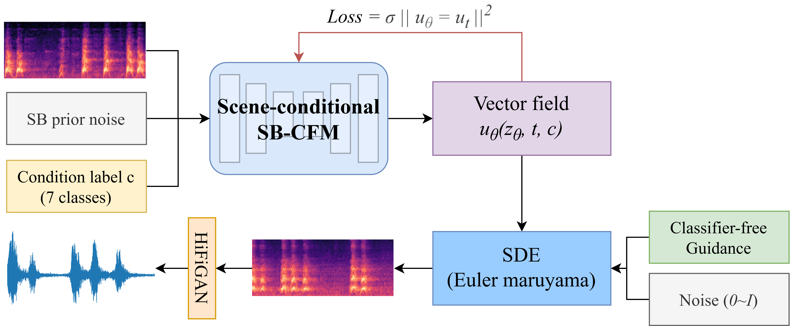

Under Review
This paper proposes a scene-conditioned Foley sound synthesis method based on Schrödinger Bridge Conditional Flow Matching (SB-CFM). The proposed approach leverages entropic optimal transport coupling and Schrödinger bridge regularization to learn a robust velocity field for mapping noise to realistic Foley sounds under scene-category conditions. To address the inherently multi-modal nature of Foley synthesis, we adopt SDE-based sampling combined with classifier-free guidance. Experiments on the DCASE 2023 Task 7 dataset show that SB-CFM outperforms existing diffusion-based baselines across all evaluation metrics.
Overview of the proposed SB-CFM framework for scene-conditioned Foley sound synthesis. The model learns a velocity field that transports Gaussian noise to mel-spectrogram representations, conditioned on scene category embeddings. HiFi-GAN is used as the vocoder to convert generated mel-spectrograms to waveforms.
Figure 1. Overall architecture of the proposed SB-CFM model.
We compare SB-CFM with three baselines on the DCASE 2023 Task 7 dataset: the official DCASE Baseline, T-Foley, and MambaFoley. All metrics are averaged across seven sound scene categories.
| Model | Params | FAD ↓ | Acc ↑ | KL ↓ | IS ↑ |
|---|---|---|---|---|---|
| DCASE Baseline | 112M | 10.06 | 0.64 | 0.26 | 3.68 |
| T-Foley | 74M | 8.60 | 0.77 | 0.34 | 3.97 |
| MambaFoley | 47M | 7.50 | 0.89 | 0.07 | 4.16 |
| SB-CFM (Ours) | 45M | 6.02 | 0.94 | 0.05 | 5.18 |
| Scene | Baseline | T-Foley | MambaFoley | SB-CFM (Ours) |
|---|---|---|---|---|
| Dog bark | 10.92 | 6.57 | 7.21 | 3.62 |
| Footstep | 10.29 | 15.04 | 8.82 | 5.10 |
| Gunshot | 8.39 | 5.50 | 5.24 | 5.74 |
| Keyboard | 4.72 | 6.01 | 8.48 | 3.03 |
| Moving motor vehicle | 19.62 | 19.34 | 13.54 | 10.80 |
| Rain | 13.14 | 11.76 | 5.20 | 5.96 |
| Sneeze / cough | 3.41 | 5.08 | 4.00 | 2.90 |
Below are generated audio samples for each of the seven scene categories. For each scene, we provide three randomly sampled outputs from each model. All samples are 4 seconds at 22.05 kHz.
@inproceedings{sbcfm2025,
title = {Scene-conditioned Foley Sound Synthesis via
Schr{\"o}dinger Bridge Conditional Flow Matching},
author = {Anonymous},
booktitle = {Proc. Interspeech 2025},
year = {2025}
}